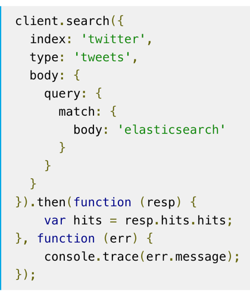

class: center, middle # Elasticsearch ### (continued) --- # Elasticsearch Review * Used for: Searches, Logging, Analytics * full text search, online stores “suggested for you”, calculating geospatial data * Stores data in JSON format * Distributed - allows for lots of data, can search very fast * But write speed is slow compared to SQL * Data integrity is an issue * Do not use as a primary datastore --- # Elasticsearch Index * An index is a collection of similar data (books, people). * Each piece of data is a document (like one record in SQL, a specific book). * Each document is made up of fields, sometimes called properties/props. * Each field has a type, just like in SQL. * The types interact with searches. For instance, a geo distance query can only be run on a geo point field. --- # Document Mapping * Mapping is defining how the document and its fields/properties/props are stored and how it is indexed. * You might think of this like a schema or migration for SQL. * Remember, you can index the same data multiple times. * Maybe username is in a text field for full-text search but also in a keyword field for sorting/aggs. --- # Field Types * Field datatypes include: * text, keyword, date, boolean, ip, double * object or nested which support nesting JSON * geo_point, geo_shape, completion (specialized types) --- # _id * Lucene/ES uses a foreign key `_id`, just like many other databases. * The contents will be a hash, not sequential numbers. * This is to avoid collisions - two records accidentally being assigned the same `_id` because two nodes tried to write at the same time. * Since data is potentially distributed to many servers, managing unique ids is complicated. --- # Mapping Explosions <h3 style="text-align: center";> * BOOM *</h3> You can map data dynamically! Hey, we’ve been doing it! * For dynamic fields, new field names will be auto added. If you don’t send ES data on the fields, it does this. * Some field types won’t be mapped correctly automatically (like geopoints). * This is super powerful but can get out of hand, leading to a variety of errors referred to as mapping explosions. * You can set limits to the number of fields, and how deep it can be nested to prevent errors (data loss). --- # When Data Changes * What if you need to add or change a field? re-indexing! * `_reindex` doesn’t actually change data in place. * It copies data over from an old index into a new one VERY FAST. You still have to set up the new one first. * A good strategy is to timestamp the indices and keep an old one to fall back on in case of catastrophic failures * `book_index` points to book_index_20180127193111111 * `book_index_201801251035111111` is still around just in case! --- # Is There an Easier Way? * Most production apps use a library. It’s faster to write and easier to avoid errors, with a little upfront learning cost. * There are many language-specific official clients, with libraries built atop them: * Python - elasticsearch-py, requests, urllib * Ruby - elasticsearch-ruby, elasticsearch-rails, searchkick, chewy * … some others including .NET, JavaScript, PHP --- # Elasticsearch in Java * Spring Data Elasticsearch, Jest, Spring Data Jest, Java REST Client, Elastisch (Clojure)… * Internal Java API? * Since ES is written in Java, it is possible to use the internal Java API used by Elasticsearch itself instead of the REST API (higher maintenance cost could buy you faster implementation). --- # Elasticsearch in the Browser: * We will be using Elasticsearch.js in jQuery: https://www.elastic.co/guide/en/elasticsearch/client/javascript-api/current/about.html * This library is currently available in multiple flavors (vanilla js, Angular, and jQuery). * The learning overhead is low because syntax is very close to regular Elasticsearch. * This should be a fast experience for the user (they won’t have to wait for round-trips to the server). --- # Elasticsearch.js <div class = "left-column" > <ul> <li>Queries in this library are virtually the same syntax as regular Elasticsearch.</li> <li>We’ll cover this in more depth in the walkthrough.</li> </ul> </div> <div class = "right-column" >  </div> --- # Requests in the Browser * We’re going to use JavaScript to have buttons submit searches on our data using Ajax. * We will have to manage CORS in order to do this * In the walkthrough we will show you how to tell your Elasticsearch cluster that your application is allowed to access the data, called “whitelisting.” * By default, web browsers are not allowed to make requests to other servers. This is to prevent data from being pushed and pulled from unauthorized web sites. --- # CORS, What Is It? * CORS stands for "cross origin resource sharing." * This is a W3 spec meant to prevent malicious behavior on websites. * CORS allows servers to specify not just who can access its assets, but also how the assets can be accessed. * Further reading: https://www.codecademy.com/articles/what-is-cors --- # More Practice! * In the walkthrough, you will practice retrieving and creating document mappings. * Then in the studio, you will set up Elasticsearch in your Airwaze project using Elasticsearch.js. * We’re going to write a query and handle it client-side using Ajax in jQuery. * ES Official Docs: https://www.elastic.co/guide/en/elasticsearch/reference/current/index.html